Shadowrun Builder helps you make a Sixth World runner by the book, keeps the sheet up to date as the character grows, and does the bookkeeping at the table: dice pools, damage, Edge, ammo, spells and spirits. The GM gets a screen of their own for campaigns, encounters and a quick rules reference, and can follow the players’ sheets live.
A step-by-step wizard that checks the creation rules as you go.
Tap a pool to roll. Damage, Edge, ammo and wound modifiers are tracked for you.
Scan the GM’s QR code and your sheet shows up on their screen.
GM tools: turn order, enemies from your books, statuses, rules lookup.
| New character | The wizard. Eight steps: concept, priorities, attributes, skills, qualities, gear, contacts and review. Each step has tips and a checklist, and the counters at the top show what you have left to spend. |
| Quick make | A finished, legal runner in one click. Pick a role and metatype. Great for a one-shot or an NPC. With rulebooks in the Library it also picks gear, qualities and spells. |
| Enter existing | Type in a character you already have (on paper or elsewhere) without the creation rules getting in the way. |
| Import | Load a file exported from Shadowrun Builder, or a Commlink (commlink.rocks) export. You get a report of what came across. |
Everything is saved in your browser as you go; there is no account and no save button. That also means clearing the browser’s site data deletes it, so connect a backup:
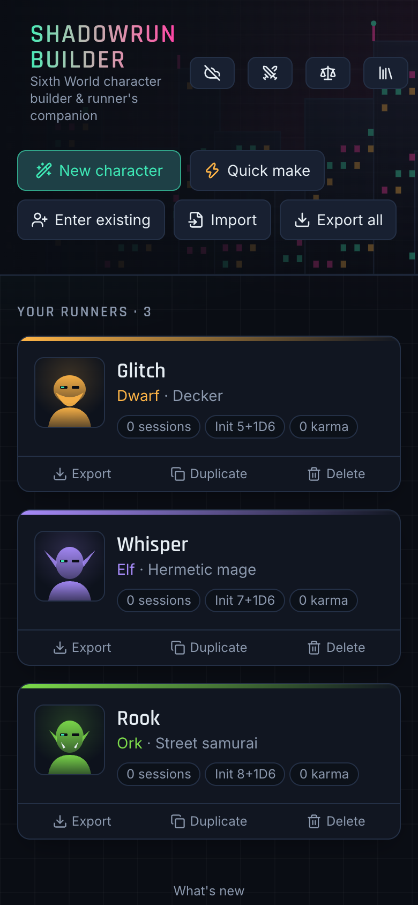
The wizard walks you through character creation; the other tabs keep the character right afterwards.
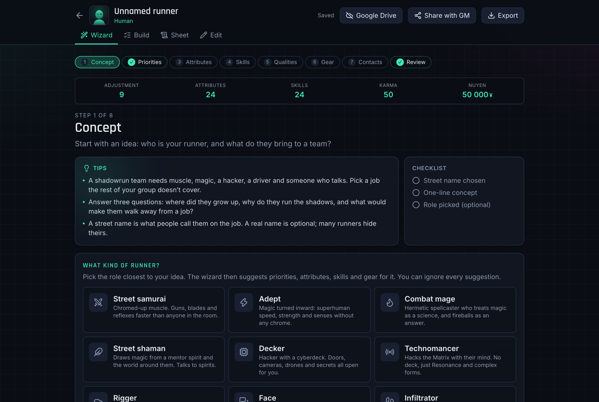
Prefer one long page? The Build tab shows every choice at once.
| Sheet | Everything worked out: dice pools, Defense Rating, damage tracks, Matrix numbers. Print play sheet gives you one page for pen-and-paper play. |
| Play | The table view: see page 3. |
| Karma | Spend karma between runs at the book’s prices: attributes, skills, specializations, qualities, spells, initiation and submersion. Every purchase is logged. |
| Edit | Change anything by hand. The menu at the top jumps to a section. |
In the Library, add the Shadowrun 6 PDFs you own. They stay on your device, and if you like you can also keep a copy in your own Google Drive. With books added:
Your character sheet, turned into a play screen. Open it on your phone when the game starts.
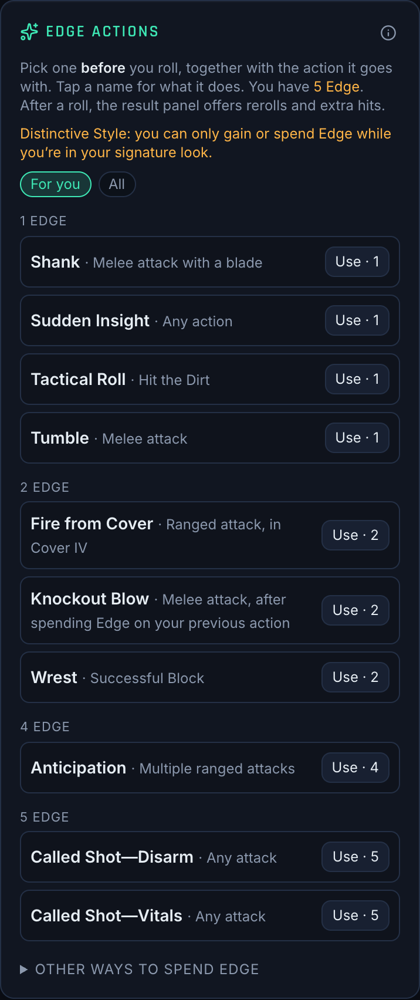
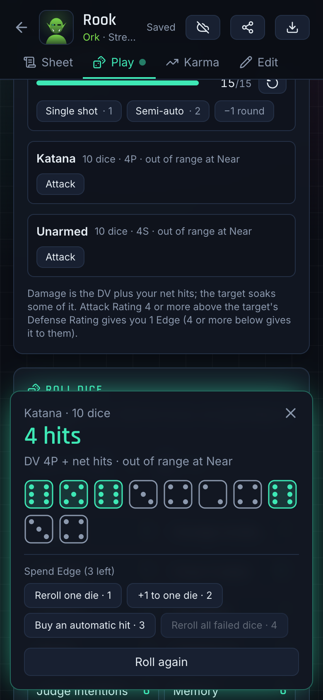
Your GM can follow your runner live: sheet, damage, Edge and ammo. They can look; only you can change your character.
No QR code? Open the character, tap Share with GM (the share icon at the top), type the code and password, and tap Find campaign.
In the same dialog, Send a copy sends your character file through the phone’s share menu (chat, mail, AirDrop…). The GM imports it on their campaign page. It’s a snapshot, so send it again after changes.
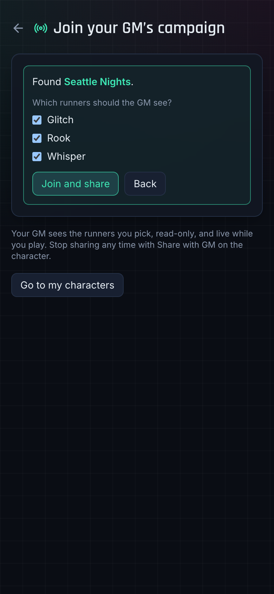
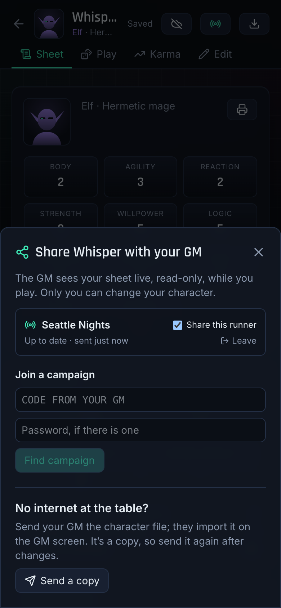
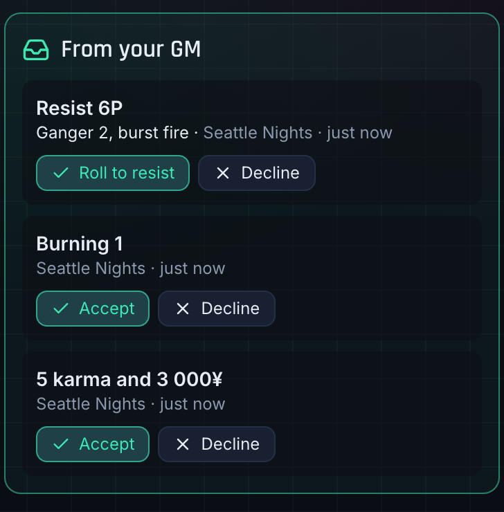
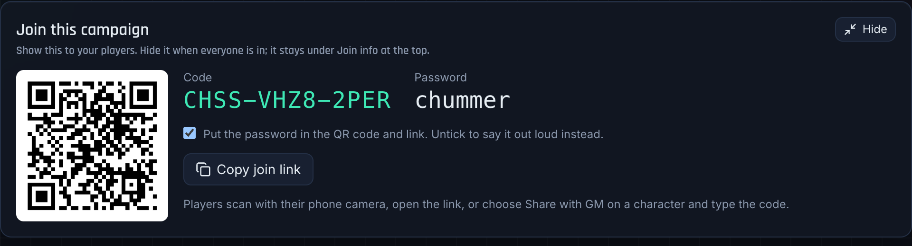
The GM button on the start page opens your screen. Each campaign keeps your group together: its runners, cast, encounters, run log and notes.
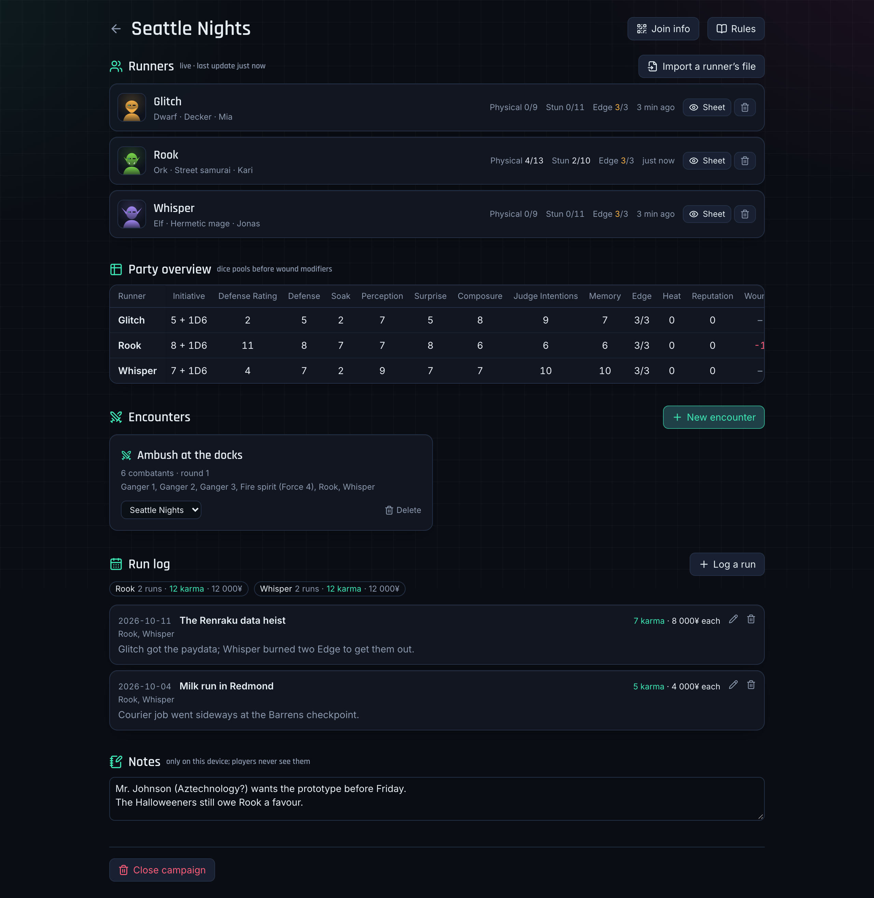
Each shared runner shows their damage, Edge and when they last changed. Tap Sheet for their full sheet, read-only. Use the bin icon to remove a runner; the player can share again.
Import a runner’s file adds a runner a player sent with Send a copy.
The numbers you check or roll in secret, for the whole group: Initiative, Defense Rating, Defense, Soak, Perception, Surprise, Composure, Judge Intentions, Memory, Edge, Heat, Reputation, Wounds, plus magic type, astral sight and cyberdecks. Hover a column header to see how it’s made.
Your recurring people: the fixer, the Johnson, the gang boss with a grudge. Add someone with who they are, ally, neutral or enemy, and notes. Give the ones who might fight a stat block from your books or a few quick numbers, and they’re one tap away in any encounter.
Log a run after each game night: date, title, karma and nuyen paid to each runner, who played and what happened. Totals per runner add up at the top. Notes hold plot threads, NPCs and loose ends. Players never see either.
Connect Google Drive and everything on the GM screen is backed up to a “GM” folder in your Drive: campaigns with their codes and passwords, cast, encounters, notes and run log. Connect the same Drive on your laptop and tablet and it follows you. An orange banner warns you while nothing is backed up.
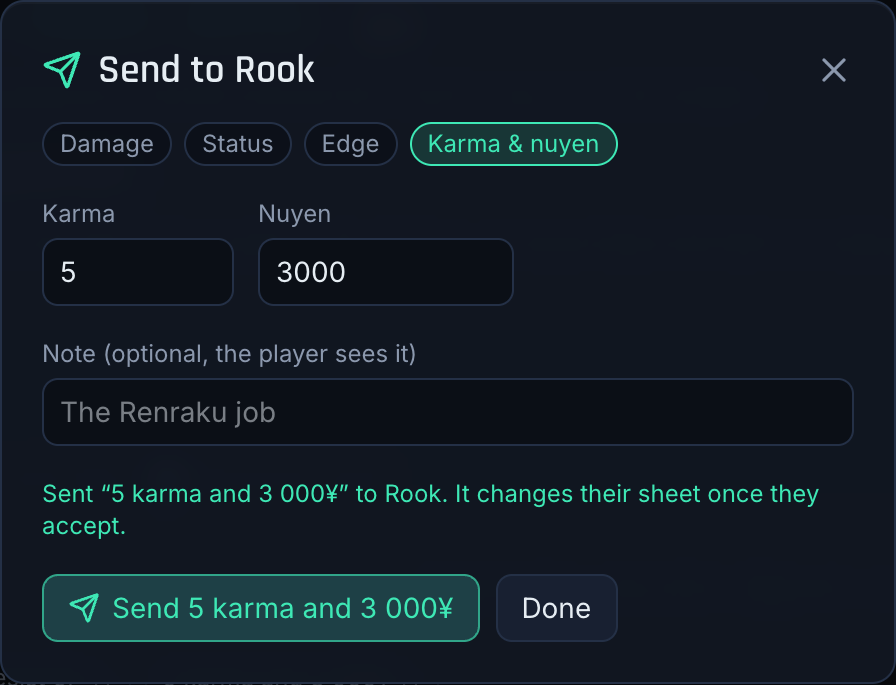
Set up fights before the session; at the table, the action screen keeps the turn order, actions, damage and statuses for everyone.
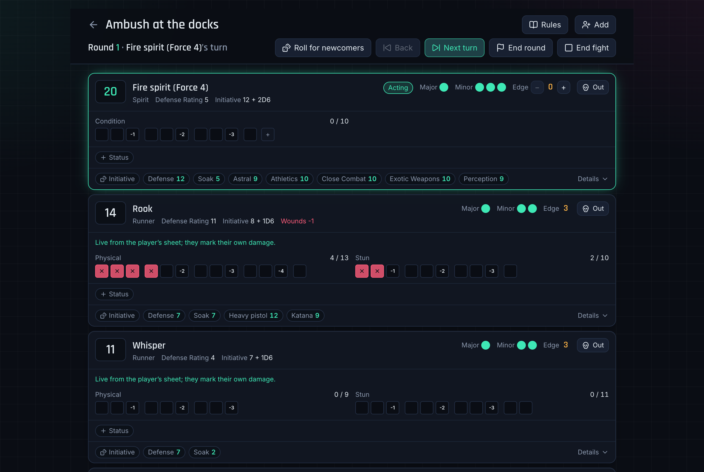
New encounter on the campaign page, then Add:
Rules has short summaries with page numbers: rounds, actions, attacking, Edge, damage and healing, magic and Matrix, statuses. Searching also looks through every book in your Library.